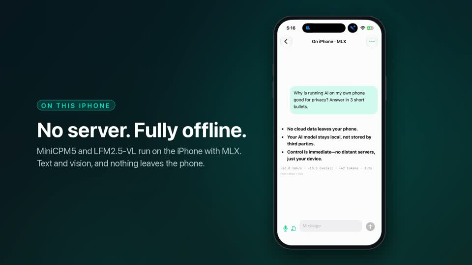
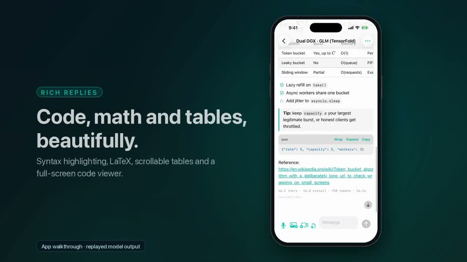
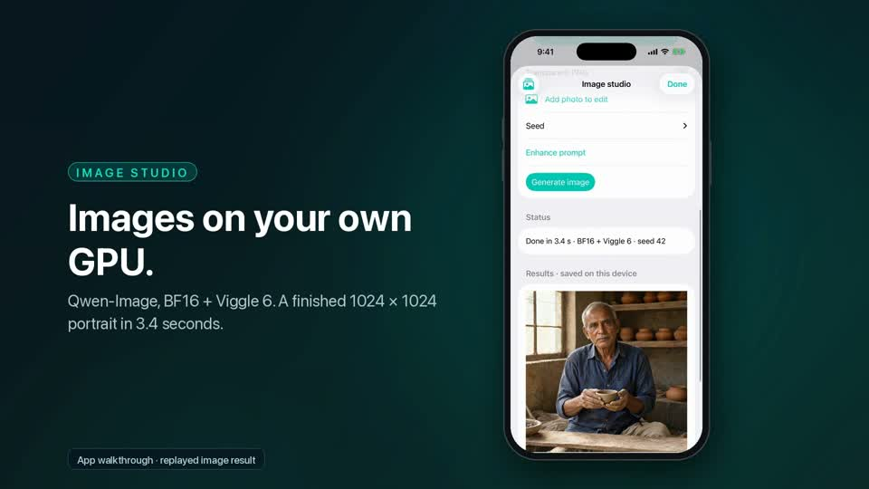

When a healthy cluster is still slow
103–116%
Measured on my cluster against published prefill references
Investigating a two-box setup whose diagnostics looked healthy while its interconnect underperformed.
Read the cluster case study →I deploy and optimise private AI on Apple Silicon, DGX / GB10 and RTX hardware—and build the native apps and workflows that make it useful.
These case studies come from my own lab.
Investigating a two-box setup whose diagnostics looked healthy while its interconnect underperformed.
Read the cluster case study →Reducing startup delay for a model spanning two machines, with accuracy checked after the change.
Read the startup case study →Language and vision serving, image editing and video generation on the same hardware platform.
Read the workstation case study →Native app development for iPhone, iPad and MacBook, with on-device MLX inference and connections to private model infrastructure. A product experience that brings the model to the user.
MLX text and vision, local speech workflows and memory-aware model lifecycle handling.
An Apple app experience for a larger screen, alongside access to private AI services.
Mac applications and MLX models running on the MacBook, extending private AI to the desktop.



A three-minute ModelDeck walkthrough, from the native interface to AI workflows. The demo shows the product experience; local and connected capabilities are explained on the Apple apps page.
MLX models on Mac, on-device text and vision, and native apps for iPhone, iPad and MacBook.
Two-box deployment, RDMA and NCCL diagnosis, distributed inference and workload benchmarks.
Language and vision serving, image/video workflows and reliable Docker / WSL2 operation within your memory budget.
Coding agents, document assistants and native interfaces connected to models on hardware you control.
Model selection, quantization, targeted fine-tuning, upgrades and runbooks, measured against your actual workload.
I work through deployment, memory limits, performance, application integration and recovery, so your private AI is usable from the devices and tools you already rely on.
Agree on users, data boundaries, hardware, budget and what a useful result looks like.
Compare a baseline with the proposed approach using representative prompts and acceptance criteria.
Integrate the model with the intended tools, document access and back up configuration before changes.
Check performance and output quality, deliver a runbook, and agree on ongoing support.
Scope and acceptance criteria are agreed before implementation. Measurements should describe the workload they actually tested.
eAccelerate is my independent consulting practice, focused on private AI running on client-owned hardware. My lab spans two GB10 systems, an RTX PRO 5000 workstation and Apple Silicon with MLX.
I build the applications as well as the infrastructure: native Apple apps, on-device MLX and private model services. For your project, I validate the proposed approach on my hardware before accepting implementation work.
Independent of NVIDIA and ASUS.
A fixed quote and agreed deliverables before work starts. Setup work includes a 14-day fix window.
A temporary SSH key or shared screen. I don’t ask for your passwords, and project access is removed at handover.
Configuration backups before changes, a rollback plan, benchmarks on your prompts and a runbook written for your system.
Email or message me with your hardware, intended workflow and the problem you want to solve. We’ll arrange a free 15-minute call and agree on scope before any work starts.